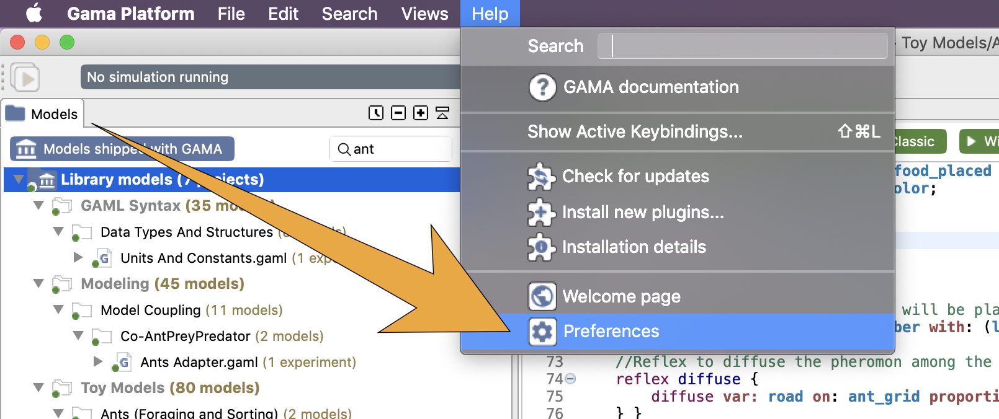
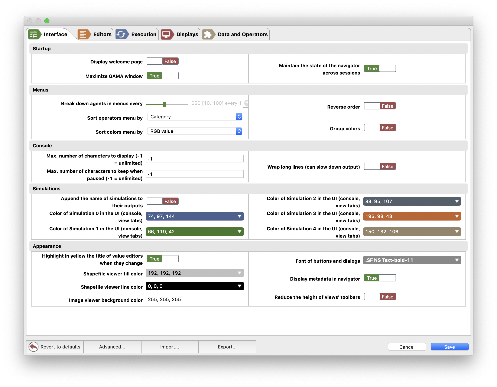
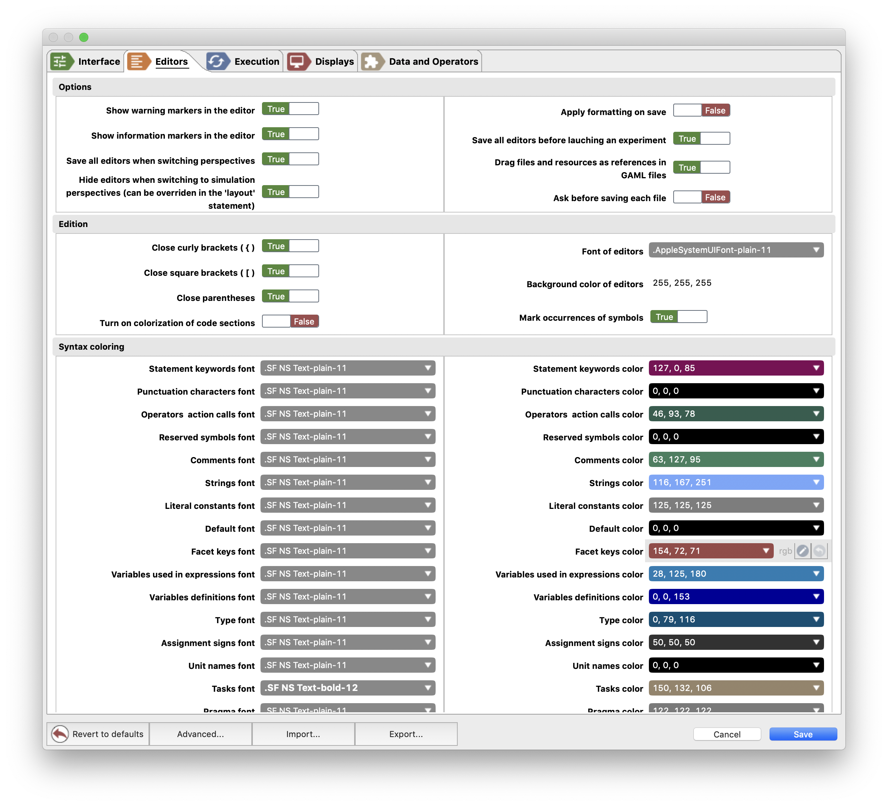
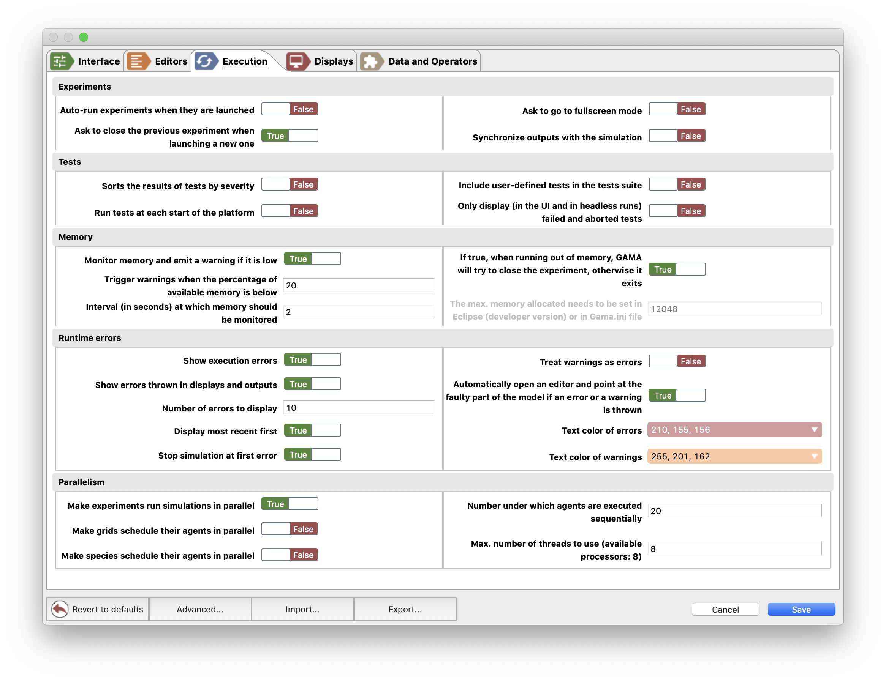
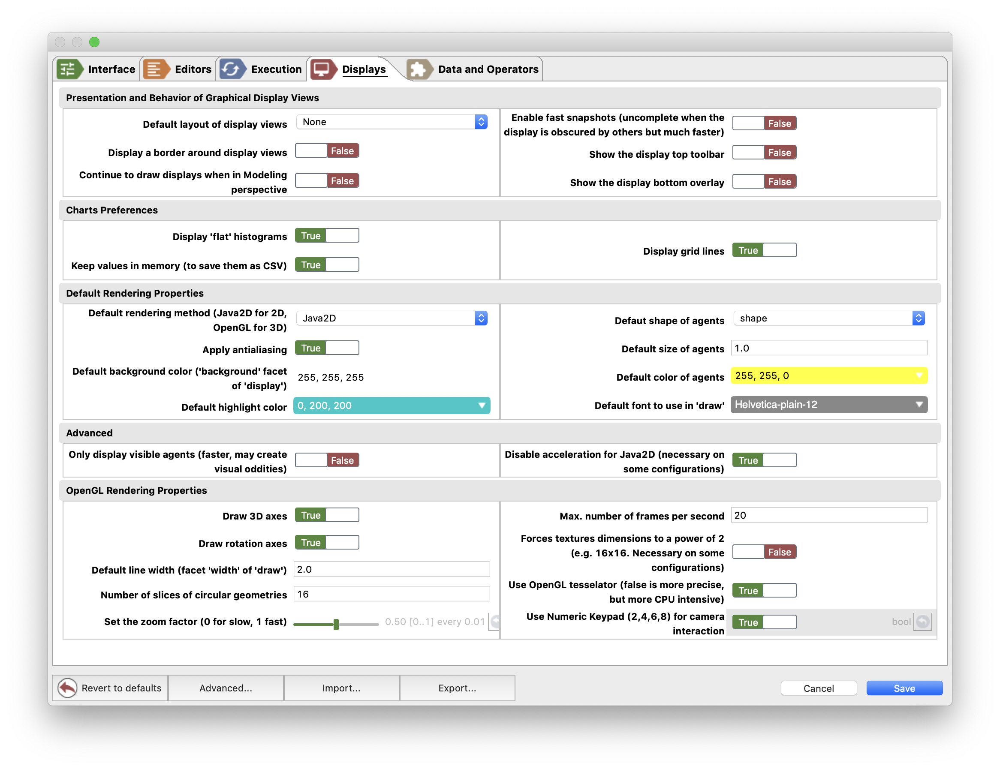
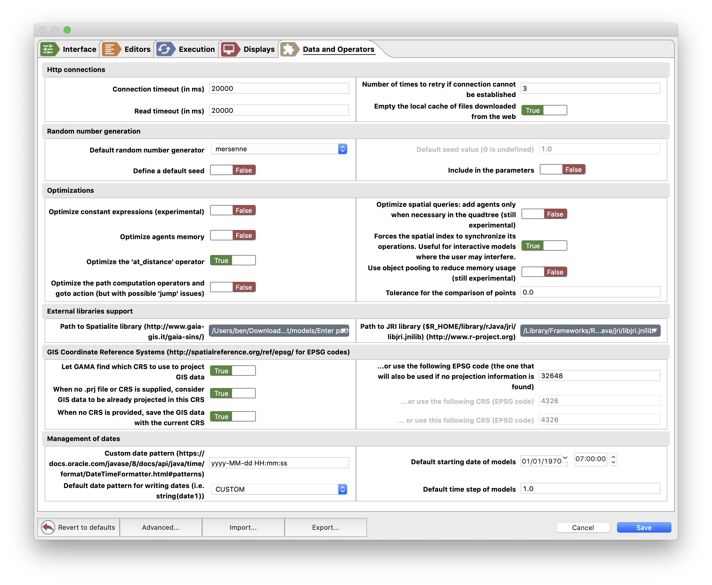
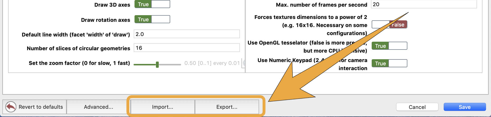
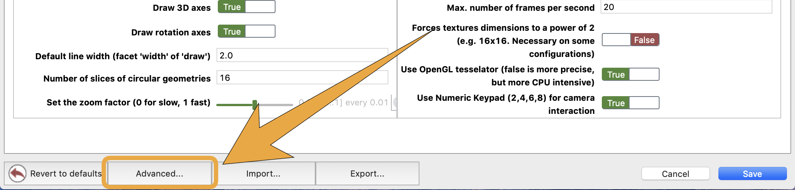
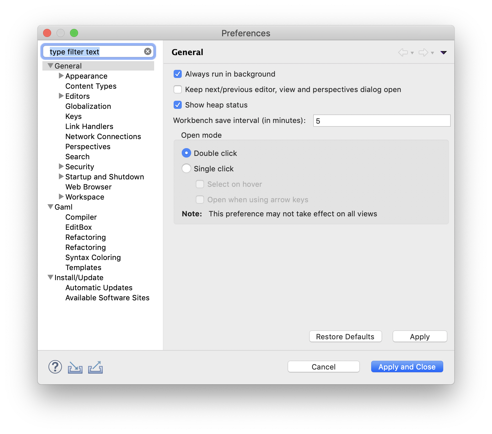

Preferences
Various preferences are accessible in GAMA to allow users and modelers to personalize their working environment. This section reviews the different preference tabs available in the current version of GAMA, as well as how to access the preferences and settings inherited by GAMA from Eclipse.
Please note that the preferences specific to GAMA will be shared, on the same machine, and for the same user, among all the workspaces managed by GAMA. Changing workspace will not alter them. If you happen to run several instances of GAMA, they will also share these preferences.
Table of contents
Opening Preferences
To open the preferences dialog of GAMA, either click on the small "form" button on the top-left corner of the window or select "Preferences..." from the Gama, "Help" or "Views" menu depending on your OS.

Interface
The Interface pane gathers all the preferences related to the appearance and behavior of the elements of the Graphical User Interface of GAMA.

- Startup
- Display welcome page: if true, and if no editors are opened, the welcome page is displayed when opening GAMA.
- Maximize GAMA window: if true, the GAMA window is open with the maximal dimensions at startup.
- Maintain the state of the navigator across sessions: if true, the context of the navigator (project opened, file selected...) will be saved when GAMA is closed and reloaded next start.
- Menus
- Break down agents in menu every: when inspecting a large number of agents, this preference sets how many should be displayed before the decision is made to separate the population in sub-menus.
- Sort operators menu by: among [category, name], this preference sets how the operators should be displayed in the menu
"Model" > "Operators"(available only in Modeling perspective, when a model editor is active). - Sort colors menu by: among [RGB value, Name, Brightness, Luminescence], this sets how are sorted the colors in the menu
"Model" > "Colors"(available only in Modeling perspective, when a model editor is active). - Reverse order: if true, reverse the sort order of colors sets above.
- Group colors: if true, the colors in the previous menu are displays in several sub-menus.
- Console
- Max. number of characters to display in the console (-1 means no limit)
- Max. number of characters to keep when paused (-1 means no limit)
- Wrap long lines (can slow down output)
- Simulations
- Append the name of simulations to their outputs: if true, the name of the simulation is added after the name of the display or monitor (interesting in case of multi-simulations).
- Color of Simulation X in the UI (console, view tabs): each simulation has a specific color. This is particularly interesting in case of a multi-simulations experiment to identify the displays of each simulation and its console messages.
- Appearance
- Highlight in yellow the title of value editors when they change
- Shapefile viewer fill color
- Shapefile viewer line color
- Image viewer background color: Background color for the image viewer (when you select an image from the model explorer for example)
- Font of buttons and dialogs
- Display metadata in navigator: if true, GAMA provides some metadata (orange, in parenthesis) after the name of files in the navigator: for a GAML model, it is the number of experiments; for data files, it depends on the kind of data: (for shapefiles) number of objects, CRS and dimensions of the bounding box, (for csv) the dimensions of the table, the delimiter, the data type ...
Editors
Most of the settings and preferences regarding editors can also be found in the advanced preferences.

- Options
- Show warning markers in the editor: if false, the warning will only be available from the Validation View.
- Show information markers in the editor: if false, the information will only be available from the Validation View.
- Save all editors when switching perspectives
- Hide editors when switching to simulation perspectives (can be overridden in the 'layout' statement)
- Applying formatting on save: if true, every time a model file is saved, its code is formatted.
- Save all model files before launching an experiment
- Drag files and resources as references in GAML files: a GAML model file is dropped in another file as an import and other resources as the definition of a variable accessing to this resource.
- Ask before saving each file
- Edition
- Close curly brackets ({)
- Close square brackets (])
- Close parentheses
- Turn on colorization of code sections: if true, it activates the colorization of code blocks in order to improve the visual understanding of the code structure.
- Font of editors
- Background color of editors
- Mark occurrences of symbols: if true, when a symbol is selected, all its other occurrences are also highlighted.
- Syntax coloring: this section allows the modeler to set the font and color of each GAML keyword kind in the syntax coloring (in any GAMA editor).
Execution
This pane gathers all the preferences related to the execution of experiments, memory management, the errors management, and the parallelism.

- Experiments: various settings regarding the execution of experiments.
- Auto-run experiments when they are launched: see this page.
- Ask to close the previous simulation before launching a new one: if false, previous simulations (if any) will be closed without warning.
- Ask to go to fullscreen mode: if true, ask the modeler before switching to the fullscreen mode.
- Synchronize outputs with the simulation: if true, simulation cycles will wait for the displays to have finished their rendering before passing to the next cycle (this setting can be changed on an individual basis dynamically here).
- Tests
- Sorts the results of tests by severity
- Run tests at each start of the platform
- Include user-defined tests in the tests suite
- Only display (in the UI and in headless runs) failed and aborted tests
- Memory: a given amount of memory (RAM) is allocated to the execution of GAMA (it has to be set in the
Gama.inifile). The allocated memory size should be chosen in accordance with the requirements of the model that is developed and the other applications running in your OS.- Monitor memory and emit a warning if it is low: a warning will appear during an experiment run when the memory is low.
- Trigger warnings when the percentage of available memory is below
- Interval (in seconds) at which memory should be monitored
- If true, when running out of memory, GAMA will try to close the experiment, otherwise it exits
- Runtime errors: how to manage and consider simulation errors.
- Show execution errors: whether errors should be displayed or not.
- Show errors thrown in displays and outputs: the code defined inside the
aspectblock of a species will be executed each time the agents are repainted in a display. In particular, when the displays are not synchronized, some errors can occur due to some inconsistency between the model and the display (e.g. drawing a dead agent). As a consequence, the code executed inside an aspect should be limited as much as possible. - Number of errors to display: how many errors should be displayed at once
- Display most recent first: errors will be sorted in the inverse chronological order if true.
- Stop simulation at first error: if false, the simulations will display the errors and continue (or try to).
- Treat warnings as errors: if true, no more distinction is made between warnings (which do not stop the simulation) and errors (which can potentially stop it).
- Automatically open an editor and point at the faulty part of the model if an error or a warning is thrown
- Text color of errors
- Text color of warnings
- Parallelism: various settings regarding the parallel execution of experiments.
- Make experiments run simulations in parallel: if true, in the case of a multi-simulations experiment, the simulation will be executed in parallel (note that the number of simulations that can be executed in parallel will depend on the number of threads to use).
- Make grids schedule their agents in parallel: the agents of grid species will be executed in parallel. Depending on the model, this could increase the simulation speed, but the modeler cannot have any control over the execution order of the agents.
- Make species schedule their agents in parallel
- Number under which agents are executed sequentially
- Max. number of threads to use (available processors: 8)
Displays

- Presentation and Behavior of Graphical Display Views
- Default layout of display views: among [None, stacked, Split, Horizontal, Vertical]. When an experiment defines several displays, they are by default (layout None) opened in the same View. This preference can set automatically this layout. A
layoutstatement can also be used inexperimentto redefine programmatically the layout of display views. - Display a border around display views
- Continue to draw displays when in Modeling perspective: if true, when the simulation is running and the modeler chooses to switch to the Modeling perspective the displays are still updated. This is particularly relevant for displays showing plots of data over time.
- Enable fast snapshots (uncomplete when the display is obscured but much faster)
- Show the display top toolbar: this could also be configured manually for each display (cf displays related page).
- Show the display bottom overlay: this could also be configured manually for each display (cf displays related page).
- Default layout of display views: among [None, stacked, Split, Horizontal, Vertical]. When an experiment defines several displays, they are by default (layout None) opened in the same View. This preference can set automatically this layout. A
- Charts Preferences
- Display 'flat' histograms: if false, the histograms are displayed in a 3D style.
- Keep values in memory (to save them as csv)
- Display grid lines: in charts (and in particular
series), if true, a grid is displayed in background.
- Default Rendering Properties: various properties of displays
- Default rendering method (JavaED fro 2D, OpenGL for 3D): use either 'Java2D' or 'OpenGL' if nothing is specified in the declaration of a display.
- Apply antialiasing: if true, displays are drawn using antialiasing, which is slower but renders a better quality of image and text (this setting can be changed on an individual basis dynamically here).
- Default background color: indicates which color to use when none is specified in the declaration of a display.
- Default highlight color: indicates which color to use for highlighting agents in the displays.
- Default shape of agents: a choice between
shape(which represents the actual geometrical shape of the agent) and geometrical operators (circle,square,triangle,point,cube,sphereetc.) as default shape to display agents when noaspectis defined. - Default size of agents: what size to use. This expression must be constant.
- Default color of agents: what color to use.
- Default font to use in 'draw'
- Advanced:
- Only display visible agents (faster, may create visual oddities)
- Disable acceleration for Java2D (necessary on some configurations)
- OpenGL Rendering Properties: various properties specific to OpenGL-based displays
- Draw 3D axes: if true, the shape of the world and the 3 axes are drawn
- Draw rotation axes: if true, a sphere appears when rotating the scene to illustrate the rotations.
- Default line width (facet
widthofdraw): the value is used indrawstatement that draws a line without specifying thewidthfacet. - Number of slices of circular geometries: when a circular geometry (circle, sphere, cylinder) is displayed, it needs to be discretized in a given number of slices.
- Set the zoom factor (0 for slow, 1 fast): this determines the speed of the zoom (in and out), and thus its precision.
- Max. number of frames per second
- Forces textures dimension to a power of 2 (e.g. 16x16. Necessary on some configurations)
- Use OpenGL tesselator (false is more precise, but more CPU intensive)
- Use Numeric Keypad (2,4,6,8) for camera interaction: use these numeric keys to make quick rotations.
Data and Operators
These preferences pertain to the use of external libraries or data with GAMA.

- Http connections
- Connection timeout (in ms): set the connection timeout when the model tries to access a resource on the web. This value is used to decide when to give up the connection try to an HTTP server in case of response absence.
- Read timeout (in ms): similar to connection timeout, but related to the time GAMA will wait for a response in case of reading demand.
- Number of times to retry if connection cannot be established
- Empty the local cache of files downloaded from the web: if true, after having downloaded the files and used them in the model, the files will be deleted.
- Random Number Generation: all the options pertaining to generating random numbers in simulations
- Default random number generator: the name of the generator to use by default (if none is specified in the model).
- Define a default seed: whether or not a default seed should be used if none is specified in the model (otherwise it is chosen randomly by GAMA)
- Default seed value (0 is undefined): the value of this default seed
- Include in the parameter: whether the choice of generator and seed is included by default in the parameters views of experiments or not.
- Optimizations
- Optimize constant expressions (experimental): whether expressions considered as constants should be computed and replaced by their value when compiling models. Allows to save memory and speed, but may cause some problems with complex expressions.
- Optimize agents memory: whether the memory used by agents is reduced (or not) when their structure appears to be simple: no sub-agents, for instance, because no sub-species is defined.
- Optimize the 'at_distance' operator: an optimisation that considers the number of elements on each side and changes the loop to consider the fastest case.
- Optimize the path computation operators and goto action (but with possible 'jump' issues): when an agent is not already on a path, simplifies its choice of the closest segment to choose and makes it jump directly on it rather than letting it move towards the segment.
- Optimize spatial queries: add agents only when necessary in the quadtree (still experimental): if no queries is conducted against a species of agents, then it is not necessary to maintain them in the global quad tree.
- Forces the spatial index to synchronize its operations. Useful for interactive models where the user may interfere.: when true, forces the quadtree to use concurrent data structures and to synchronize reads and writes, allowing users to interact with the simulation without raising concurrent modification errors.
- Use object pooling to reduce memory usage (still experimental): when true, tries to reuse the same common objects (lists, maps, etc.) over and over rather than creating new ones.
- Tolerance for the comparison of points: depending on the way they are computed, 2 points who should be the same, could not be equal. This preference allows to be more tolerant in the way points are compared.
- External libraries support
- Path to Spatialite (http://www.gaia-gis.it/gaia-sins/): the path toward the spatial extension for the SQLite database.
- Path to JRI library ($R_HOME/library/rJava/jri/libjri.jnilib) (http://www.r-project.org): when we need to couple GAMA and R, we need to set properly the path toward this file.
- GIS Coordinate Reference Systems (http://spatialreference.org/ref/epsg/ for EPSG codes): settings about CRS to use when loading or saving GIS files
- Let GAMA decide which CRS to use to project GIS data: if true, GAMA will decide which CRS, based on input, should be used to project GIS data. Default is false (i.e. only one CRS, entered below, is used to project data in the models)
- ...or use the following CRS (EPSG code): choose a CRS that will be applied to all GIS data when projected in the models. Please refer to http://spatialreference.org/ref/epsg/ for a list of EPSG codes.
- When no .prj file or CRS is supplied, consider GIS data to be already projected in the CRS: if true, GIS data that is not accompanied by a CRS information will be considered as projected using the above code.
- ...or use the following CRS (EPSG code): choose a CRS that will represent the default code for loading uninformed GIS data.
- When no CRS is provided, save the GIS data with the current CRS: if true, saving GIS data will use the projected CRS unless a CRS is provided.
- ...or use the following CRS (EPSG code): otherwise, you might enter a CRS to use to save files.
- Management of dates: some preferences for default values related to the dates in GAMA.
- Custom date pattern (https://docs.oracle.com/javase/8/docs/api/java/time/format/DateTimerFormatter.html#patterns)
- Default date pattern for writing dates (i.e. string(date1))
- Default starting date of models: set the default value of the global variable
starting_date. - Default time step of models: define the default duration of a simulation step, i.e. the value of the variable
step(by default, it is set to 1s).
Manage preferences in GAML
All these preferences can be accessed (set or read) directly in a GAML model. To share your preferences with others (e.g. when you report an issue), you can simply export your preferences in a GAML model. Importing preferences will set your preferences from an external GAML file.

When you export your preferences, the GAML file will look like the following code. It contains 2 experiments: one to display all the preferences in the console and the other one to set your preferences will the values written in the model.
model preferences
experiment 'Display Preferences' type: gui {
init {
//Append the name of simulations to their outputs
write sample(gama.pref_append_simulation_name);
//Display grid lines
write sample(gama.pref_chart_display_gridlines);
//Monitor memory and emit a warning if it is low
write sample(gama.pref_check_memory);
//Max. number of characters to keep when paused (-1 = unlimited)
write sample(gama.pref_console_buffer);
//Max. number of characters to display (-1 = unlimited)
write sample(gama.pref_console_size);
//Wrap long lines (can slow down output)
write sample(gama.pref_console_wrap);
//Custom date pattern (https://docs.oracle.com/javase/8/docs/api/java/time/format/DateTimeFormatter.html#patterns)
write sample(gama.pref_date_custom_formatter);
// ...
Advanced Preferences
The set of preferences described above are specific to GAMA. But there are other preferences or settings that are inherited from the Eclipse underpinnings of GAMA, which concern either the "core" of the platform (workspace, editors, updates, etc.) or plugins (like SVN, for instance) that are part of the distribution of GAMA.
These "advanced" preferences are accessible by clicking on the "Advanced..." button in the Preferences view.

Depending on what is installed, the second view that appears will contain a tree of options on the left and preference pages on the right. Contrary to the first set of preferences, please note that these preferences will be saved in the current workspace, which means that changing workspace will revert them to their default values. It is, however, possible to import them in the new workspace using of the wizards provided in the standard "Import..." command (see here).
